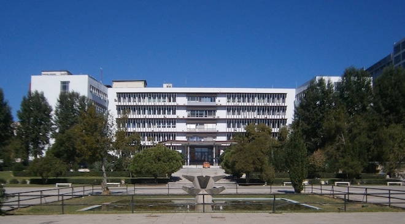

ΤΟ ΣΥΝΕΔΡΙΟ ΘΑ ΔΙΕΞΑΧΘΕΙ ΣΤΟ ΤΜΗΜΑ ΠΛΗΡΟΦΟΡΙΚΗΣ ΤΟΥ ΑΠΘ

Τμήμα Πληροφορικής ΑΠΘ
Κτίριο Βιολογίας, Πανεπιστημιούπολη ΑΠΘ
54124 Θεσσαλονίκη
Οι παρουσιάσεις θα πραγματοποιηθούν στα αμφιθεατρα 1 ,2 και 3 στον πρώτο όροφο
Στις 04-03-2021 θα πραγματοποιηθούν παρουσιάσεις από τα παρακάτω πρόσωπα τα οποία αποτελούν Διδακτικό και Ερευνητικό Προσωπικό του τμηματός Πληροφορικής του ΑΠΘ:
Αγγελής Ελευθέριος 14:00-16:00
Βακάλη Αθηνά 16:00-18:00
Βασιλειάδης Νικόλαος18:00-20:00
Το πρόγραμμα ομιλίας που θα πραγματοποιηθεί 05-03-2021 από τους:Κωνσταντίνο (Κωστής) Δασκαλάκη,Γιώργο Κ. Καραγιαννίδη και Μίνως Γαροφαλάκη μπορείται να το δείτε εδώ:
Στις 06-03-2021 θα πραγματοποιηθούν ξανά παρουσιάσεις από τα παρακάτω πρόσωπα τα οποία αποτελούν Διδακτικό και Ερευνητικό Προσωπικό του τμηματός Πληροφορικής του ΑΠΘ: